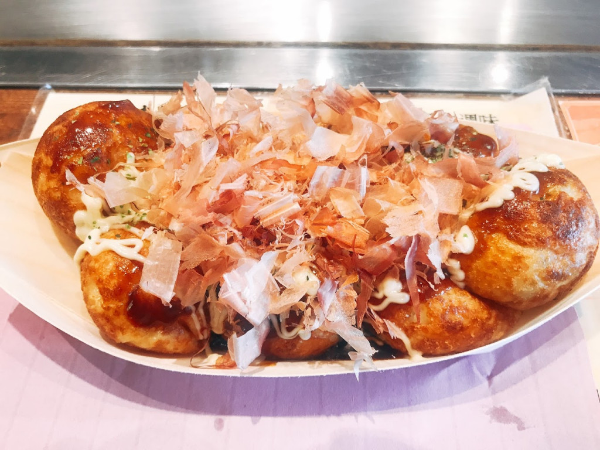
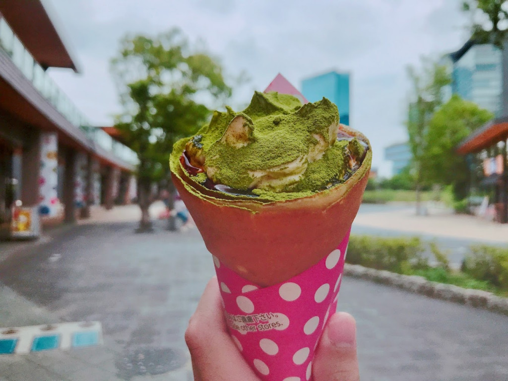

Osaka Castle
Tourist Spot

Osaka Castle Park - Beautiful in Every Season
The park surrounding Osaka Castle was opened to the public in 1931 but it wasn't until after World War II that the area was turned into an urban park. Osaka Castle Park is home to about 600 cherry trees, a peach grove with about 200 peach trees consisting of 12 different species and 1270 plum trees in its plum grove.

The plum grove is one of the most popular plum blossom viewing spots in Japan. In February, the whole area is covered in dark pink and white blossoms and hundreds of people visit each day.
The peach grove close to the plum grove was opened in 1999. Peach blossoms are so often confused with cherry blossoms which bloom in the same season that many people don't even know about this grove.
When the cherry blossoms are in bloom, all the cherry trees around the castle are lit up at night, creating a magical cherry blossom viewing experience. In autumn, the area is full of many different kinds of trees with foliage in all shades of red, orange and yellow.
Food

Takoyaki Doraku Wanaka
The popular store of Osaka Takoyaki "Wanaka" has its main shop at Sennichimae in Osaka.
Wanaka's "Takoyaki" (8 pieces for 500 yen, sauce flavor). The dough is delicious! Dashi (broth) works well, and it's nicely done with the right crispiness outside and the delightful softness and chewiness inside. Aside from the original sauce flavor, there are other choices such as Kamadakishio (salt made by boiling seawater in a flat pot) ·Soy sauce· Doro sauce (originated from Kansai, tangy flavor).
Takoyaki Doraku Wanaka Osaka Castle Park shop:
Osaka-shi Chuo-ku Osakajo 3-1 JO-TERRACE OSAKA F Terrace 102
Kobe Butter Crepe Specialty Shop Hysteric Jam
Plenty of butter is used for the dough, and the "Saku (crispy)・ Fuwa (fluffy) ・ Juwa (melty)" texture of the dough is their selling point. Surprisingly, there are over 100 flavors of crepes available! "Matcha Tiramisu" (680 yen) is the most popular item that is loved by the Japanese customers as well as the ones from overseas.
Plenty of original premium cream is used, and the royal way to eat this is to start with a spoon. There is a large bench in front of the shop so that you can get a seat and take your time to enjoy this delectable goodness.
Hysteric Jam Osaka Castle Park shop:
Osaka-shi Chuo-ku Osakajo 3-1 JO-TERRACEOSAKA F terrace 104